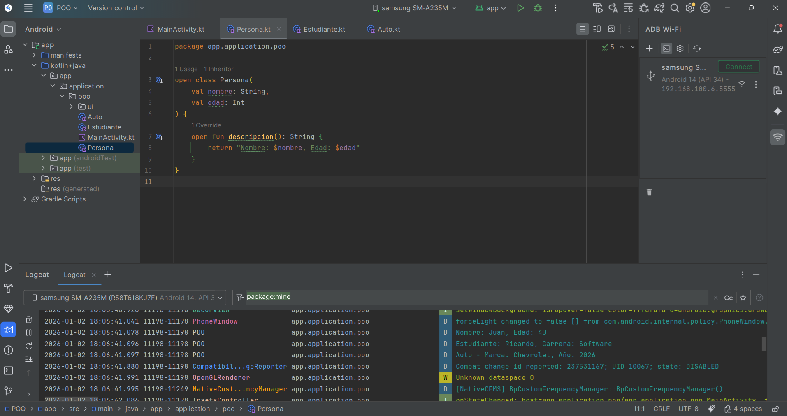

En el siguiente enlace se muestra el video de respaldo donde se evidencian las actividades realizadas sobre Programación Orientada a Objetos en Kotlin.
👉 Ver video de respaldo de Programación Orientada a Objetos
A continuación se muestra una imagen representativa del uso de clases, objetos y herencia en la aplicación desarrollada.
La Programación Orientada a Objetos (POO) es un paradigma de programación que permite organizar el software utilizando clases y objetos. Cada objeto representa una entidad del mundo real, como una persona, un auto o un producto, y contiene datos (atributos) y acciones (métodos).
Este enfoque facilita la organización del código, su reutilización y su mantenimiento, haciendo que los programas sean más claros, ordenados y escalables.
La POO se basa en cuatro pilares fundamentales:
En Kotlin una clase se define con la palabra clave class y los atributos se declaran directamente en el constructor.
class NombreClase(val atributo: Tipo) {
fun metodo(): Tipo {
return valor
}
}
Esta clase representa a una persona. Tiene nombre y edad, y un método que devuelve una descripción del objeto.
open class Persona(
val nombre: String,
val edad: Int
) {
open fun descripcion(): String {
return "Persona -> Nombre: $nombre, Edad: $edad"
}
}
Ejemplo de uso:
val persona = Persona("Carlos", 40)
println(persona.descripcion())
Resultado en Logcat:
Persona -> Nombre: Carlos, Edad: 40
La clase Estudiante hereda de Persona. Además de nombre y edad, tiene la propiedad carrera y cambia el comportamiento del método descripcion().
class Estudiante(
nombre: String,
edad: Int,
val carrera: String
) : Persona(nombre, edad) {
override fun descripcion(): String {
return "Estudiante -> Nombre: $nombre, Carrera: $carrera"
}
}
Ejemplo de uso:
val estudiante = Estudiante("Ana", 20, "Software")
println(estudiante.descripcion())
Resultado en Logcat:
Estudiante -> Nombre: Ana, Carrera: Software
La clase Auto representa un vehículo. Tiene marca y año, y un método que devuelve su información.
class Auto(
val marca: String,
val anio: Int
) {
fun info(): String {
return "Auto -> Marca: $marca, Año: $anio"
}
}
Ejemplo de uso:
val auto = Auto("Toyota", 2022)
println(auto.info())
Resultado en Logcat:
Auto -> Marca: Toyota, Año: 2022
En la aplicación Android se crean objetos de todas las clases y se muestran sus datos en Logcat.
val persona = Persona("Carlos", 40)
val estudiante = Estudiante("Ana", 20, "Software")
val auto = Auto("Toyota", 2022)
println(persona.descripcion())
println(estudiante.descripcion())
println(auto.info())
Resultado en Logcat:
Persona -> Nombre: Carlos, Edad: 40
Estudiante -> Nombre: Ana, Carrera: Software
Auto -> Marca: Toyota, Año: 2022